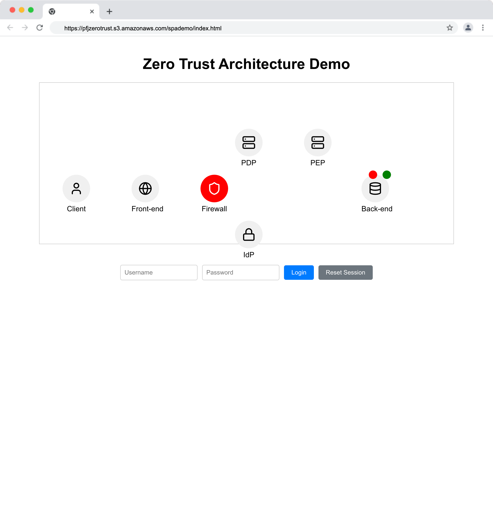

Visual Simulation: Single Packet Authentication, All Drop Firewall, SDP, PDP, PEP
Zero Trust Architecture React Visualization Guide
Introduction
This interactive React application provides a visual demonstration of Zero Trust Architecture (ZTA) principles. By engaging with this simulation, you'll gain a graphical understanding of how different components in a Zero Trust environment interact during authentication, data access processes, and various security scenarios.

Visit the Simulation from here
Visualization Overview
The application presents a simplified Zero Trust environment with the following components:
- Client: The end-user attempting to access resources.
- Front-end: The user interface of the application.
- Firewall: Acts as the initial barrier, following the "default deny" principle.
- Policy Decision Point (PDP): Evaluates access policies.
- Identity Provider (IdP): Handles user authentication.
- Policy Enforcement Point (PEP): Enforces access decisions.
- Back-end: Hosts the sensitive data.
How to Use the Visualization
- Run the React application in your browser.
- You'll see a visual representation of the Zero Trust components and a login interface.
- Interact with the login process and observe how the system responds in different scenarios.
- Watch the animation of data flow between components based on your actions.
Core Use Cases
Use Case 1: Wrong Credentials
- Enter incorrect username and password (e.g., username: "user", password: "wrongpass").
- Click the "Login" button.
- Observe the authentication failure process.
Learning Points: - How the system handles incorrect credentials. - The "default deny" principle in action. - The role of the IdP in credential verification.
Use Case 2: Proper Credentials
- Enter the correct username "admin" and password "password".
- Click the "Login" button.
- Observe the successful initial authentication process.
Learning Points: - The flow of successful credential verification. - How the system transitions to requiring additional verification (MFA).
Use Case 3: Access Backend Data (Post-Login)
- After successful login from Use Case 2, attempt to access backend data.
- Observe how the system handles this request without MFA.
Learning Points: - The principle of least privilege access. - How the system differentiates between general and sensitive data access.
Use Case 4: Logout
- After being logged in, click the "Logout" button.
- Observe how the system handles the logout process.
Learning Points: - Session termination in a Zero Trust environment. - How the system resets to its default secure state.
Use Case 5: Login, Access Sensitive Data, Wrong MFA
- Log in with correct credentials (username: "admin", password: "password").
- Attempt to access sensitive data, triggering an MFA request.
- Enter an incorrect MFA code.
- Observe the system's response to failed MFA.
Learning Points: - The role of Multi-Factor Authentication in Zero Trust. - How the system handles partial authentication success (correct password but failed MFA). - The importance of layered security measures.
Use Case 6: Login, Access Sensitive Data, Correct MFA, Access Backend Data
- Log in with correct credentials (username: "admin", password: "password").
- Attempt to access sensitive data, triggering an MFA request.
- Enter the correct MFA code "123456".
- Observe the full authentication process.
- Access the backend data and observe the data flow.
Learning Points: - The complete Zero Trust authentication and authorization process. - How successful MFA leads to access grant. - The flow of data from the backend to the client in a fully authenticated session.
Reflection Questions
- How does the visualization demonstrate the "never trust, always verify" principle of Zero Trust Architecture?
- What are the key differences you observed in the system's behavior between failed and successful authentication attempts?
- How does the addition of MFA enhance the security of the system? Are there any potential drawbacks?
- Based on the visualization, how would you explain the roles of the Policy Decision Point (PDP) and Policy Enforcement Point (PEP)?
- How does this model demonstrate the concept of least privilege access?
- Can you think of real-world scenarios where this type of authentication flow would be particularly beneficial or challenging to implement?
Extended Learning
- Research and suggest additional authentication factors that could be incorporated into this Zero Trust model.
- Discuss how this visualization might change if it were to represent a microservices architecture instead of a monolithic back-end.
- Consider how the principles demonstrated in this visualization could be applied to other areas of cybersecurity, such as network segmentation or data encryption.
By exploring these core use cases, reflecting on the questions, and engaging in extended learning activities, you'll develop a comprehensive understanding of Zero Trust Architecture principles and their practical application in modern cybersecurity environments.